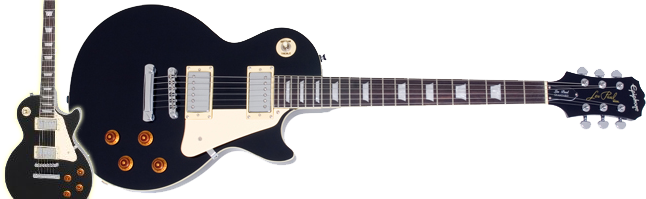

DIN FÖRSTA GITARR kommer nog vara en sorts kopia av en känd märkesmodell. Några är bättre än andra men det dom alla har gemensamt är det att dem är billiga.
Det finns också flera svåra val om hur du ska lära dig dit instrument. Ska du ta lektioner eller internetguider? Jag kommer att dela mina bästa källor och verktyg för att göra processen så enkelt och roligt som möjligt!
Det bra med en billig gitarr är att du kan prova dig fram att spela i några månader och om det inte skulle vara för dig så finns det alltid en möjlighet att sälja den eller lägga undan gitarren i källaren.
Det farliga med att köpa en gitarr som på bilden till vänster är att gitarrens bandstavar är ofta alldeles för höga och breda. Höga bandstavar gör så att strängarna böjs in mot greppbrädan när du trycker vilket ger en dålig ton. Om du har för breda bandstavar kan du skära tummen på halsen när du flyttar handen.
Jag rekommenderar någon av Epiphone Les Paul modellerna, mer specifikt: Standard modellen som är en bra gitarr för runt 3000kr. Det finns massor av modeller att välja mellan. Där priserna och kvalitén är som lägst, "Junior" modellen från cirka 1000kr, och högst på listan är "Custom PRO" modellen som ligger på runt 4800kr med guld hårdvara istället för silver. Custom PRO modellen är en gitarr som fungerar till allt och skall därför köpas om man är 100% seriös på att spela gitarr och har pengar att lägga ut. Alla modeller är radad i ordning efter prisklass och kvalité:
